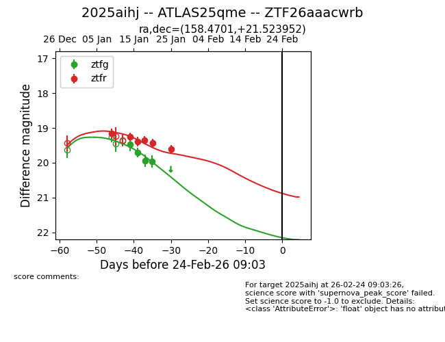
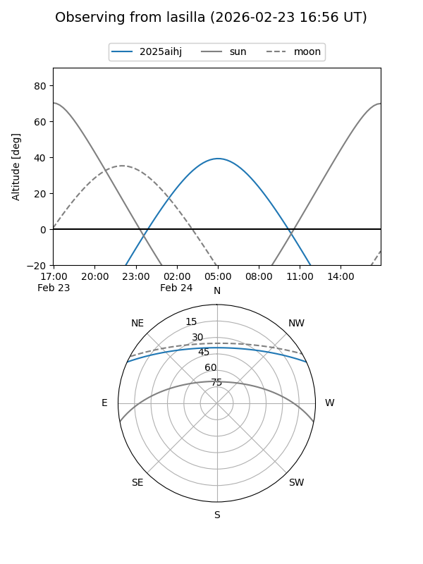
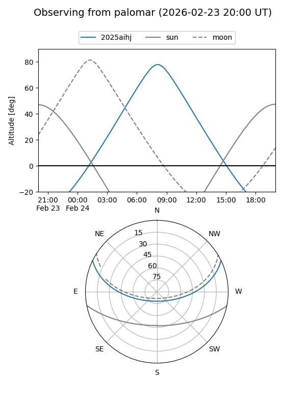
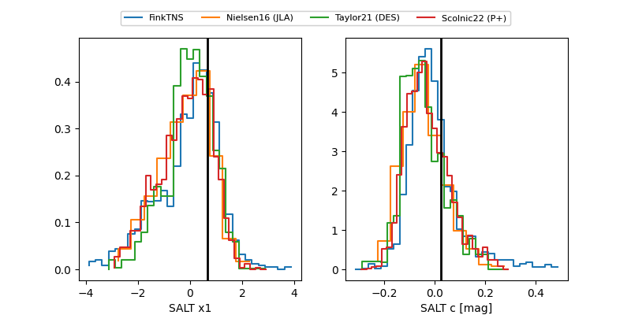

2025aihj
Target 2025aihj at 2026-01-16 10:05
Aliases and brokers:
FINK: link
Lasair: link
ALeRCE: link
TNS: link
YSE: link
alt names
ZTF26aaacwrb (ztf,fink_ztf)
2025aihj (tns,yse)
ATLAS25qme (atlas)
Coordinates:
equatorial (ra, dec) = 158.4701,+21.52395
equatorial (HMS+DMS) = 10:33:52.82,+21:31:26.23
galactic (l, b) = (215.4947,+58.26762)
Flags:
Photometry:
last ztfg=19.71, ztfr=19.25
2 ztfg, 2 ztfr detections
Lightcurve

Visibility


Additional plots
